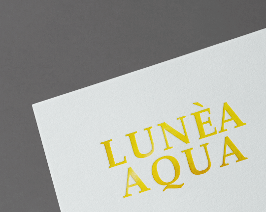
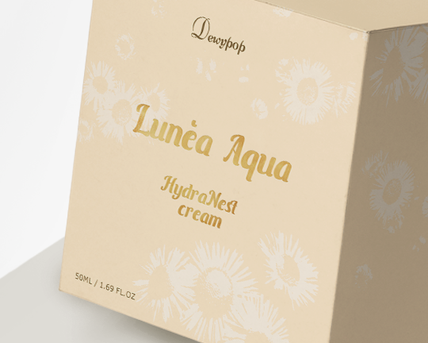
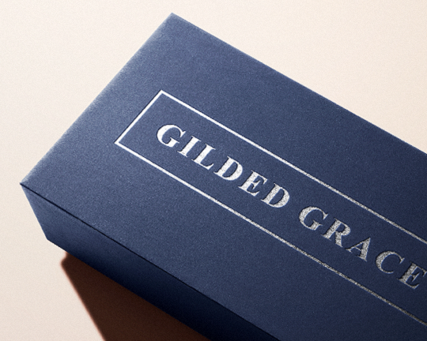
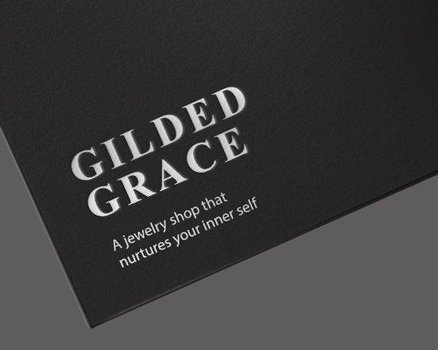
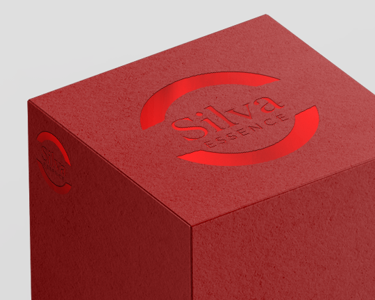
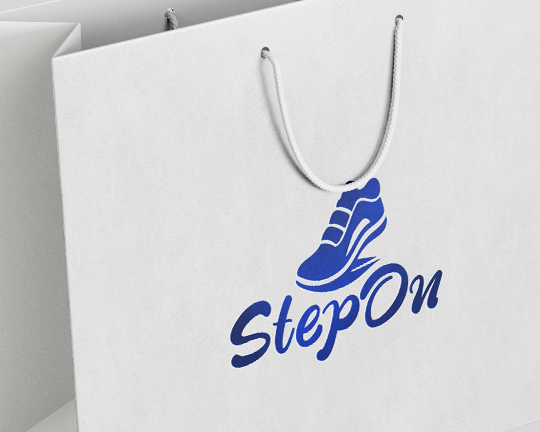
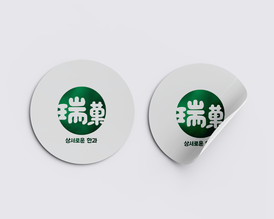
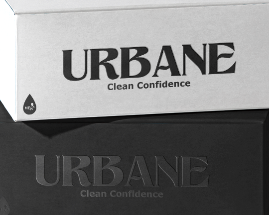
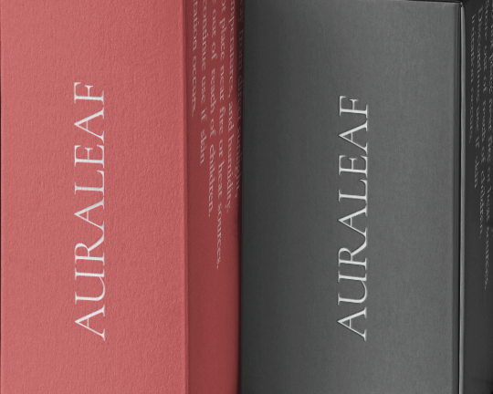
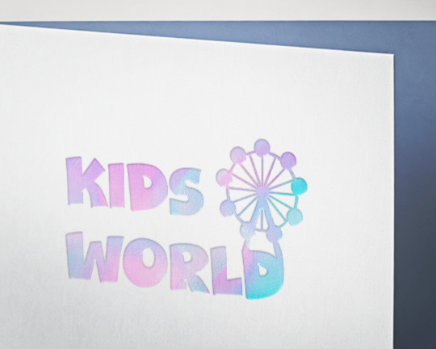

박
- 박에 압을 가하여 도장처럼 찍어내는 후가공으로 특정부분을 강조할 때 많이 사용됩니다.
- 인쇄로는 표현할 수 없는 화려하고 고습스러운 느낌을 다양한 박으로 표현할 수 있습니다.
- 후가공 박의 크기와 종이 재질차이에 따라 퀄리티 차이가 날 수 있습니다.
금박(유광)
금색의 화려한 광 때문에 고급스럽고 품격있는 효과를 표현할 수 있습니다.
-

-
금박(무광)
유광보다 광이 적기때문에 부드럽고 조금 더 차분한 느낌을 표현할 수 있습니다.
-

-
은박(유광)
은박의 은은한 광으로 심플한 느낌과 깨끗한 느낌을 표현할 수 있습니다.
-

-
은박(무광)
유광보다 광이 적어 조금 더 세련된 분위기를 표현할 수 있습니다.
-

-
적박(유광)
붉은색이 조금씩 반짝거리면서 독특한 분위기를 연출할 수 있습니다.
-

-
청박(유광)
시원하고 청량한 느낌을 표현할 수 있습니다.
-

-
녹박(유광)
녹색의 광이 조금씩 비추면서 특별함을 더해줄 수 있습니다.
-

-
먹박
평범한 먹색의 느낌에서 좀 더 감각적인 느낌을 살릴 수 있습니다.
-

-
백박
화려한 효과를 주기보다는 깔끔한 느낌의 표현을 연출할 수 있습니다.
-

-
홀로그램 박(은광)
눈에 띄고 화려한 색감으로 유니크한 느낌을 표현할 수 있습니다.
-

-